Escenarios intermedios: Industrial, Forest, Urban, Air Base, Coast
Guía de consulta basada en el manual original. Las páginas del PDF se abren en otra pestaña y las capturas pueden consultarse sin perder tu lugar.
PÁGINA 77 Escenarios intermedios - Industrial
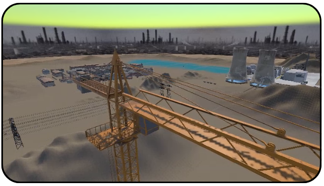
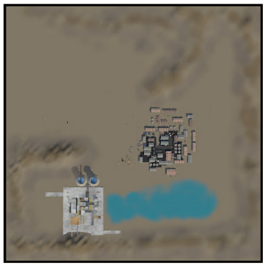
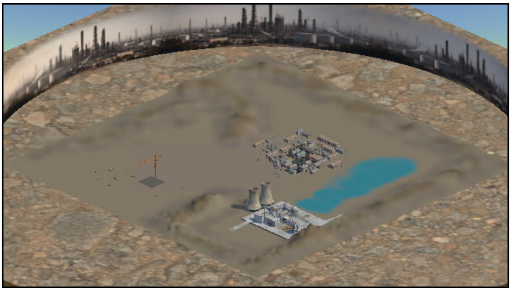
Ver recorte anterior de la página (referencia)
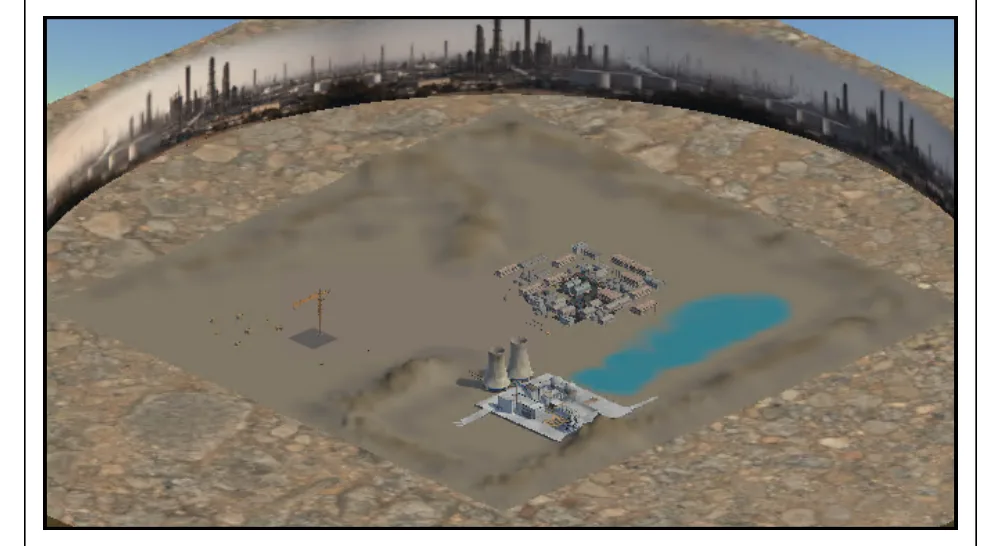
Escenarios intermedios - Industrial
Detalle
Mapa
Vista isométrica
Zona industrial densa, con estructuras metálicas, pasarelas, tubos y múltiples obstáculos cercanos, diseñada para poner a prueba el pilotaje en entornos complejos. Es ideal para entrenar orientación espacial, control fino y toma de decisiones rápida, ya que obliga a planificar rutas, mantener altura segura y corregir trayectoria constantemente entre elementos de distinta altura y profundidad.
Recomendado para practicar vuelo “táctico” a baja y media cota, pasadas entre estructuras, giros cerrados, frenadas y reposicionamiento preciso. También sirve para testear colisiones y márgenes de seguridad, validar comportamiento de cámara en oclusiones (entradas/salidas de sombra, cambios bruscos de contraste). También sirve para entrenar decisiones tácticas complementando el escenario con la caja de efectos para simular incidentes o desastres donde los drones tengan campo de acción (Ej. QBNR)
PÁGINA 78 Escenarios intermedios - Forest
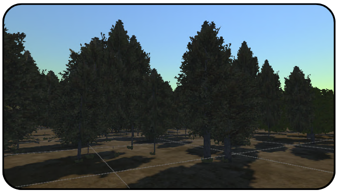
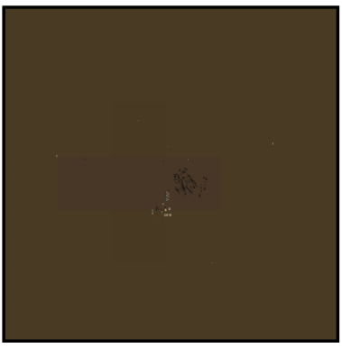
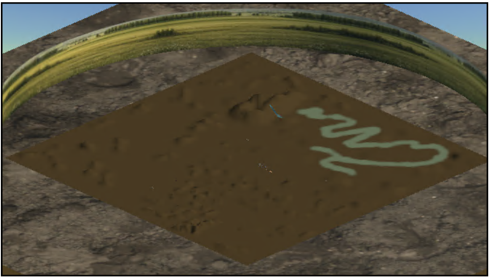
Ver recorte anterior de la página (referencia)
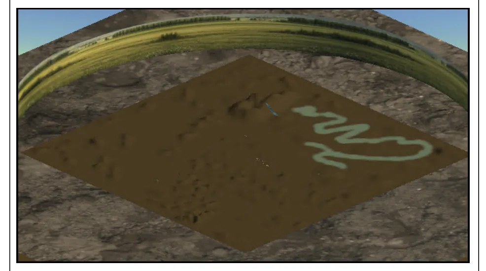
Escenarios intermedios - Forest
Detalle
Mapa
Vista isométrica
Zona de bosque con alta densidad de vegetación (árboles, ramas y claros irregulares) pensada para entrenar navegación precisa en un entorno natural “cerrado”. La cantidad de elementos verticales obliga a mantener control fino del dron, calcular huecos de paso y sostener una buena orientación, incluso cuando la visibilidad se reduce por la cobertura del follaje.
Recomendado para practicar vuelo a baja altura entre troncos, slalom competitivo, aproximaciones controladas y seguimiento de rutas usando referencias naturales (claros, líneas de árboles, cambios de luz). También es ideal para probar cámara/gimbal en condiciones de sombras y contrastes dinámicos, evaluar colisiones y tolerancias cerca de ramas, y medir rendimiento en una escena exigente por la cantidad de objetos y detalle ambiental. Si se combina con los gates añade un mapa en extremo desafiante.
PÁGINA 79 Escenarios intermedios - Urban
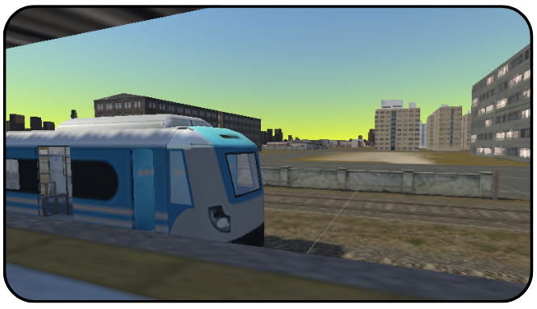
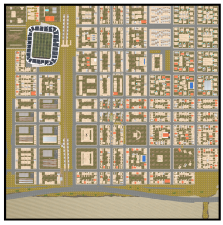
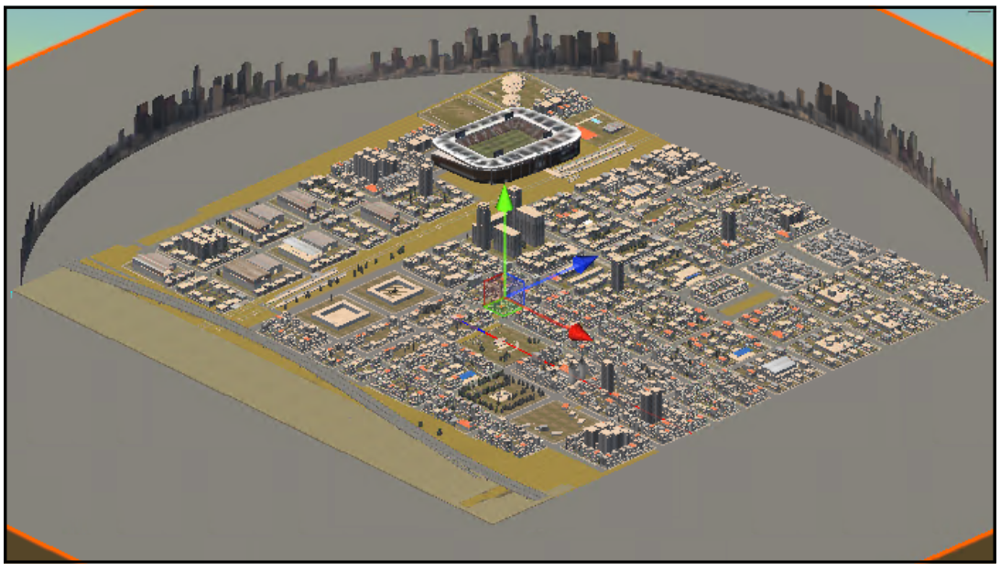
Ver recorte anterior de la página (referencia)
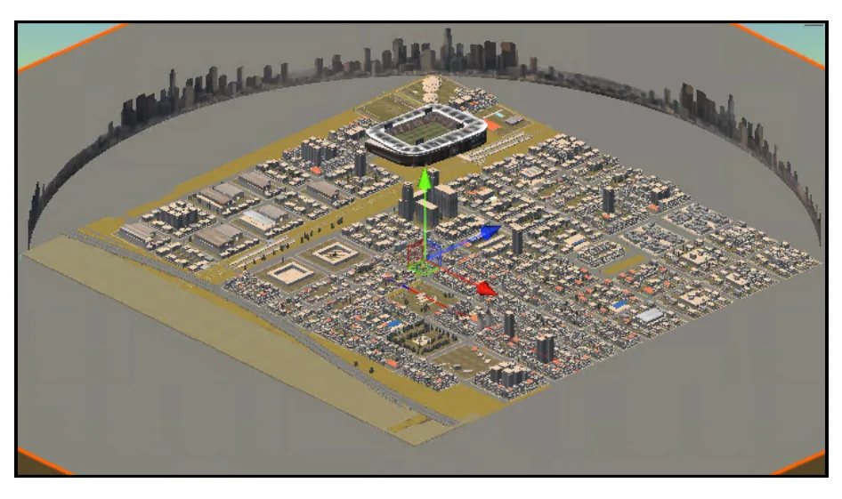
Escenarios intermedios - Urban
Detalle
Mapa
Vista isométrica
Zona urbana con calles, edificios y estructuras variadas, diseñada para practicar vuelo en “corredores” y maniobras de precisión alrededor de arquitectura realista. El trazado urbano ofrece referencias claras (esquinas, fachadas, postes, terrazas) y obliga a mantener un control constante de altura, velocidad y distancia a superficies, ideal para entrenar navegación segura en espacios donde el margen de error es reducido.
Recomendado para practicar recorridos a ras de calle, ascensos rápidos a altura de azoteas, giros en intersecciones y aproximaciones a puntos específicos (ventanas, balcones, entradas). También sirve para testear cámara/gimbal en oclusiones y cambios de luz (sombras de edificios), validar colisiones y comportamiento cerca de paredes, y evaluar rendimiento en una escena con geometría densa y líneas de visión largas. Algunos elementos tienen espacios interiores para practicar con el dron mini.
PÁGINA 80 Escenarios intermedios - Air Base
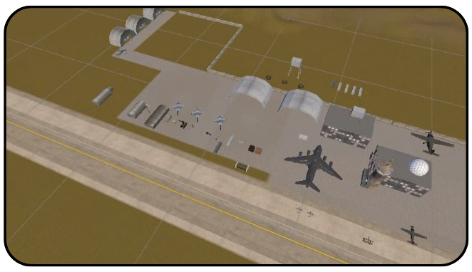
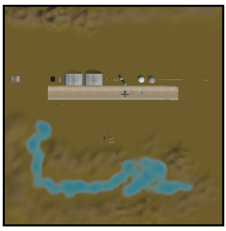
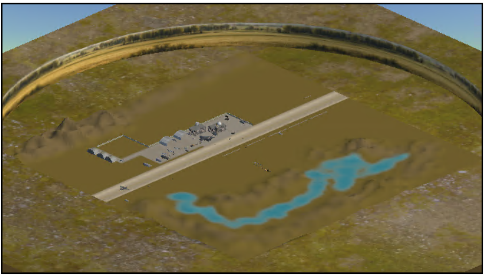
Ver recorte anterior de la página (referencia)
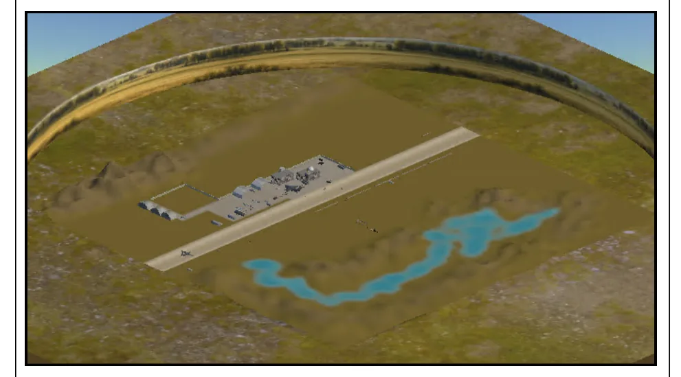
Escenarios intermedios - Air Base
Detalle
Mapa
Vista isométrica
Base aérea con aeronaves en operación y amplia infraestructura de pista/plataforma, pensada para entrenar navegación en espacios abiertos con referencias claras y zonas de riesgo bien definidas. La presencia de aviones y vehículos aporta escala real, puntos de interés para aproximación y seguimiento, y obstáculos grandes que obligan a planificar trayectorias, mantener separación y respetar alturas seguras durante recorridos sobre el aeropuerto.
Recomendado para practicar vuelos de reconocimiento sobre pista y calles de rodaje, aproximaciones a aeronaves estacionadas sin perder control fino, y pasadas largas a velocidad constante con buena lectura de telemetría. También es ideal para testear cámara/gimbal en distancias largas (zoom, estabilidad, encuadre), validar rendimiento en escenarios amplios con múltiples objetos visibles, y simular misiones tipo vigilancia/observación en un entorno “operativo” con alta visibilidad.
PÁGINA 81 Escenarios intermedios - Coast
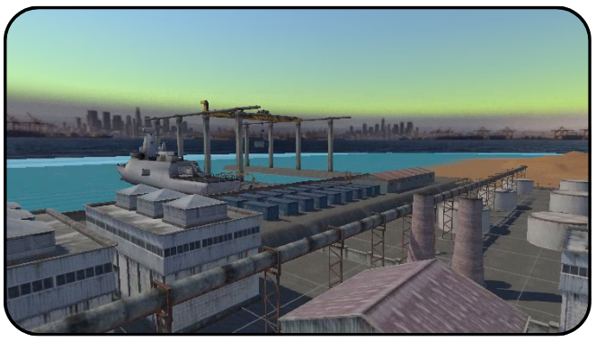
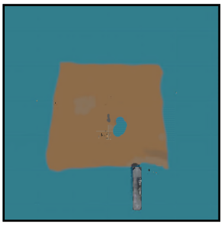
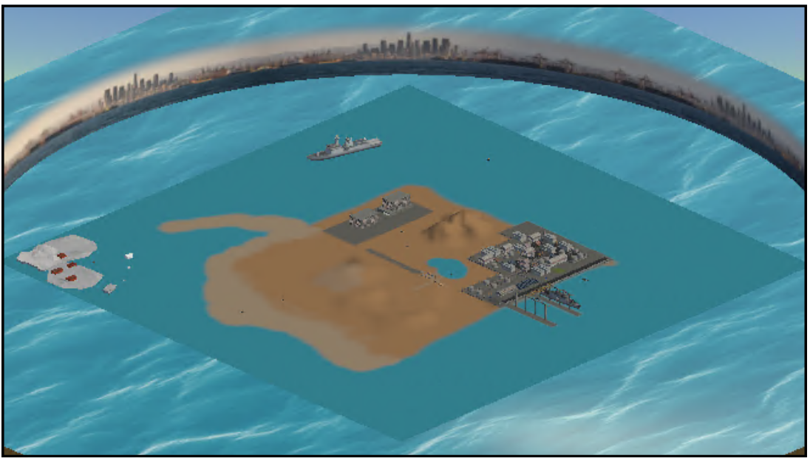
Ver recorte anterior de la página (referencia)
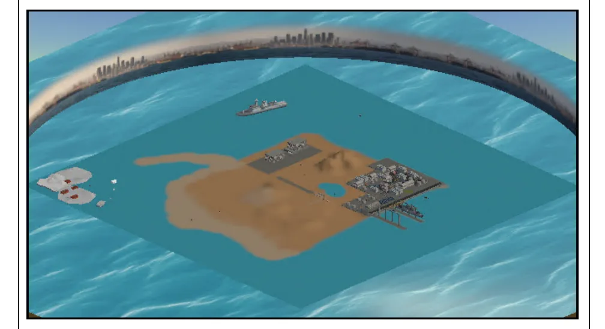
Escenarios intermedios - Coast
Detalle
Mapa
Vista isométrica
Zona costera con infraestructura portuaria y embarcaciones en movimiento, diseñada para practicar vuelo sobre agua y navegación cerca de estructuras complejas como muelles, grúas y barcos. El entorno combina espacios abiertos con obstáculos grandes, permitiendo entrenar planificación de rutas, control de altura sobre superficies reflectantes y mantenimiento de distancia segura alrededor de elementos industriales y marítimos.
Recomendado para misiones de observación y reconocimiento en costa/puerto, pasadas paralelas a muelles, órbitas alrededor de embarcaciones y aproximaciones a puntos específicos (grúas, contenedores, cubiertas). También es ideal para testear cámara/gimbal con reflejos y bruma (contraste variable), validar estabilidad en recorridos largos, y evaluar rendimiento en una escena amplia con agua, estructuras y objetos en movimiento que exigen buena lectura visual y control fino.